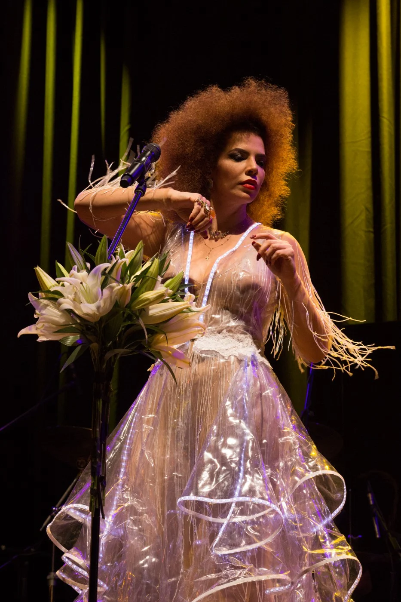

Vanessa da Mata |
Sobre Musicas Shop |

|
|---|

VANESSA DA MATA10 de fevereiro de 1976 nasce Vanessa da Mata, na cidade de Alto Garças, em Mato Grosso. Em 1990, Vanessa muda-se para Uberlândia com o intuito de se preparar melhor para o vestibular de Medicina, ao mesmo tempo que decide se dedicar, também, à música. Um ano depois, faz sua estreia nos bares da cidade mineira cantando um repertório variado entre MPB e reggae. Em 1993 muda-se para São Paulo. Em 1995, já na capital paulista, entra para Shalla-Ball, uma banda de reggae formada só por mulheres. Depois para jamaicana Black Uhuru e, em seguida, para o grupo de ritmos brasileiros Mafuá. Simultaneamente, Vanessa divide seu tempo modelando e jogando basquete. O ano de 1997 foi um divisor de águas na vida de Vanessa. Ela conhece o cantor e compositor Chico César, com quem passa a compor. O início efetivo da carreira solo de Vanessa da Mata aconteceu em 2002 . Após destacadas participações em shows de Milton Nascimento, Maria Bethânia e de Baden Powell, ela lança seu primeiro álbum de estúdio, “Vanessa da Mata”, com produção de Liminha, Jaques Morelenbaum, Luiz Brasil, Dadi e do sempre presente Kassin. Os destaques ficam por conta de “Nossa Canção”, trilha sonora da novela “Celebridade”, “Não Me Deixe Só”, que estoura nas pistas com o remix de Ramilson Maia, e “Onde Ir”, da novela “Esperança”. Depois do grande sucesso com seu primeiro disco, Vanessa lança em 2004 outro trabalho que recebe ótimas críticas e faz crescer ainda mais sua legião de seguidores. “Essa Boneca Tem Manual”, produzido por Liminha, traz o mega hit "Ai ai ai...". Outros sucessos são ''Ainda Bem'' e "Não Chore Homem". Destaque também para as regravações de “Eu sou Neguinha” (Caetano Veloso), que entra na novela “A Lua me disse”, e "História de uma gata" (Chico Buarque). Em 2006, “Ai ai ai...” torna-se a música nacional mais executada nas rádios. A ótima vendagem de “Essa Boneca Tem Manual” rende um Disco de Platina à cantora. Conquista o Prêmio Multishow de Melhor Música com "Ai, Ai, Ai". Vanessa ganha o Grammy Latino na categoria Melhor Álbum de Pop Contemporâneo Brasileiro, com "Sim", além da indicação para Melhor Canção Brasileira com "Acode". Conquista o Prêmio Multishow de Melhor Música com "Boa Sorte/Good Luck". Durante a pandemia a cantora realizou lives solidárias com a intenção de se aproximar do público e de angariar fundos para projetos sociais, além da live em homenagem a Clara Nunes que os ingressos foram revertidos para a equipe da cantora. Em setembro de 2020, Vanessa da Mata e Seu Jorge fizeram uma live no YouTube do Teatro Bradesco.
Agora, a Vanessa encerra 2022 com o primeiro single de seu próximo álbum. A primeira música de seu novo projeto, “Vem Doce”, foi escrita e delineada a partir de uma base instrumental do produtor Papatinho, sendo
essa a primeira parceria dos dois. |
 |